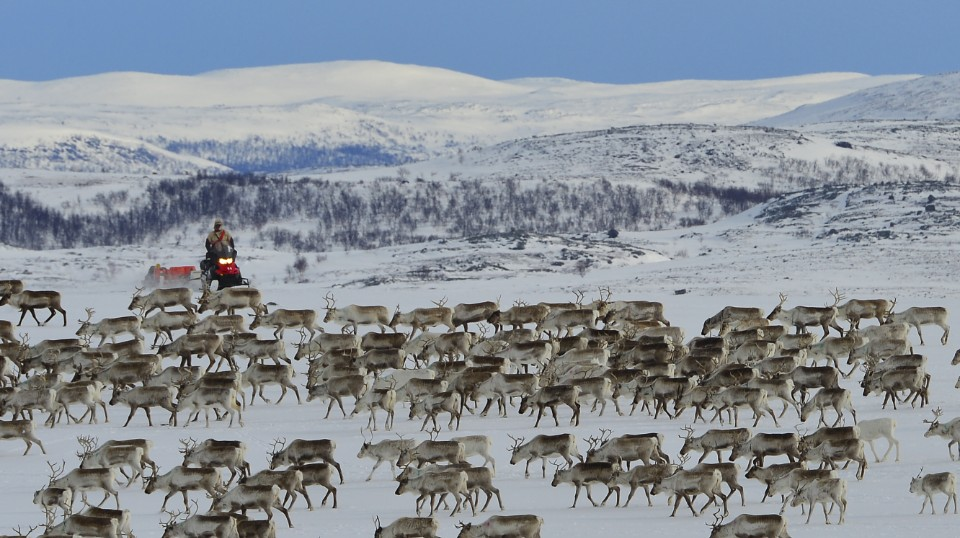
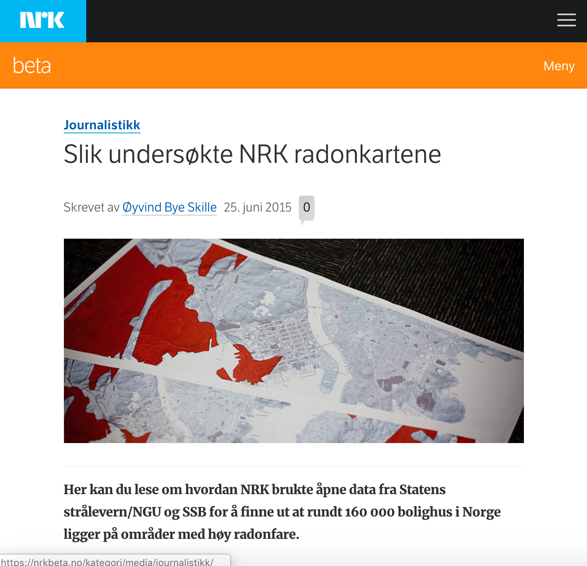

Hva er kart i NRK?
Kartografi
Journalistikk
Visualisering


Foto: Thomas Hellum / NRK
Foto: Sindre Skrede / NRK

Foto: NRK
Kartografi


Journalistikk





Visualisering


Foto: Kristoffer Løkke Sørensen / NRK


Tips oss!

Harald K. Jansson
harald.k.jansson@nrk.no
@janssonius
Øyvind Bye Skille
oyvind.bye.skille@nrk.no
@byeskille